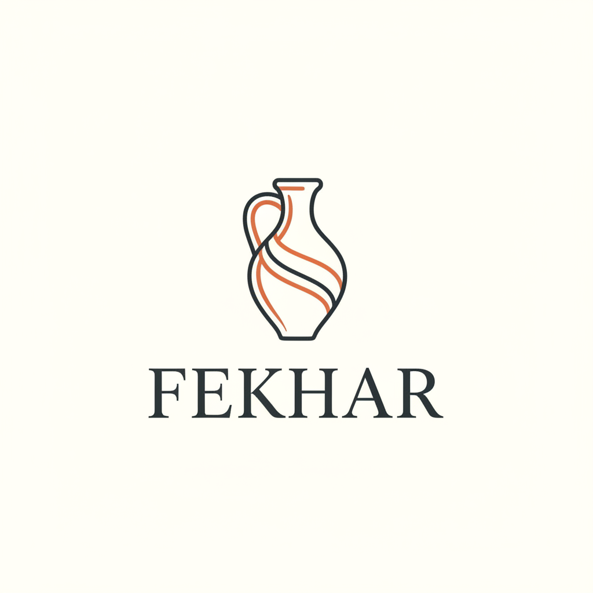
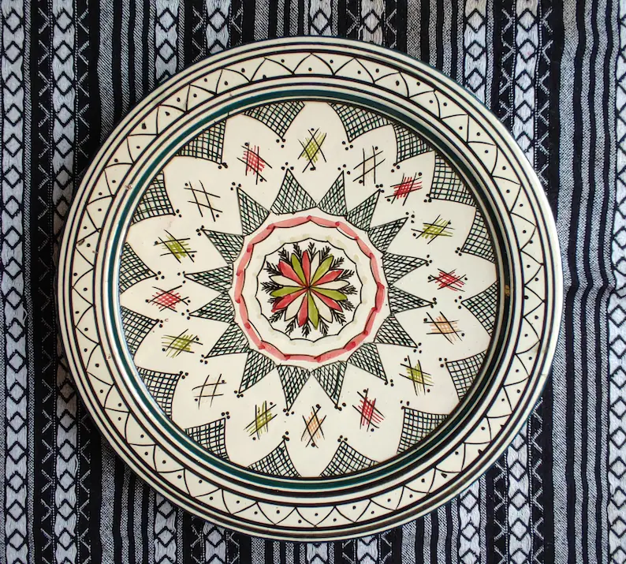
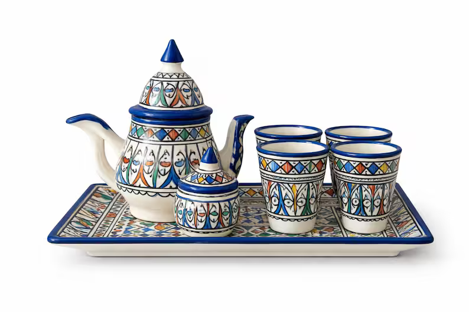
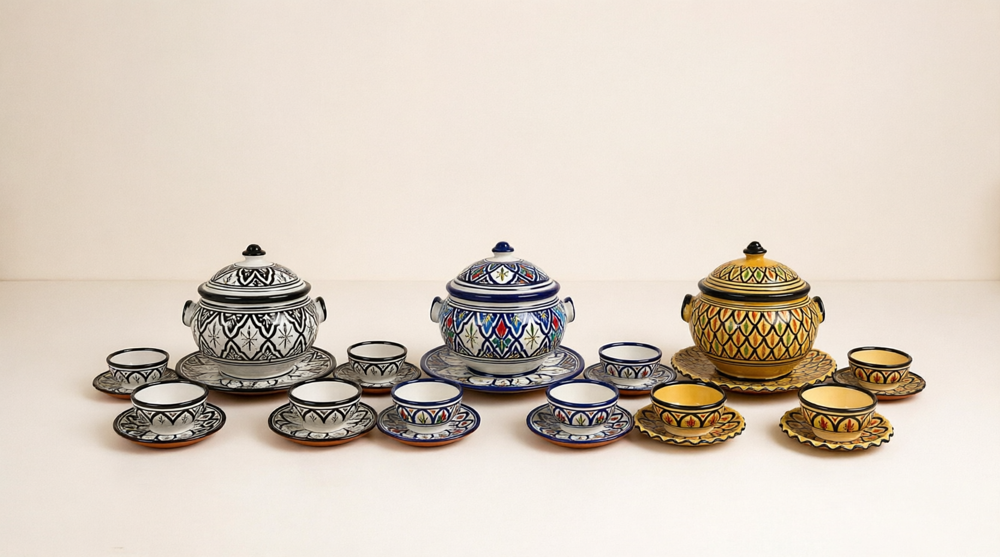
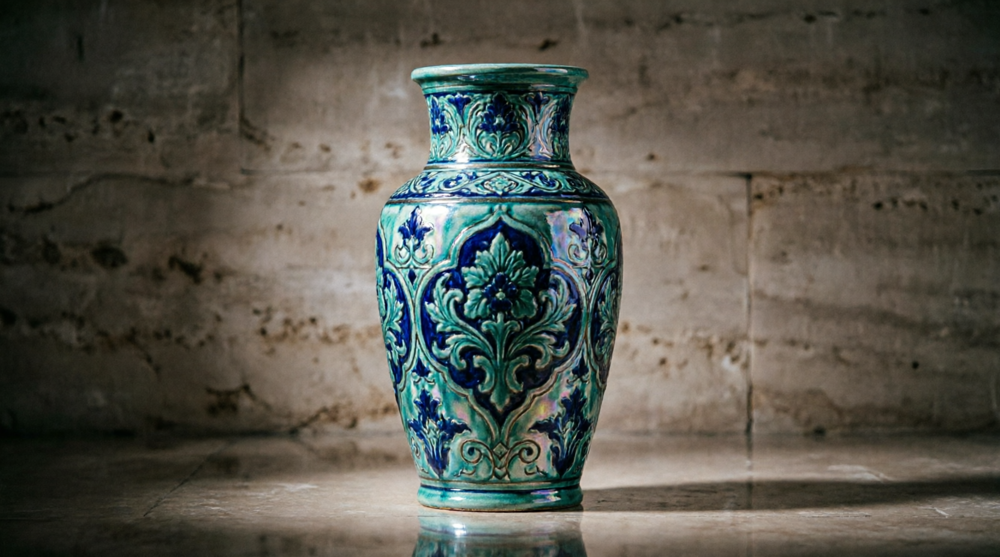
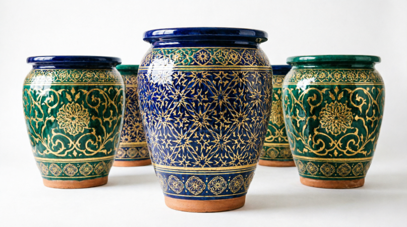
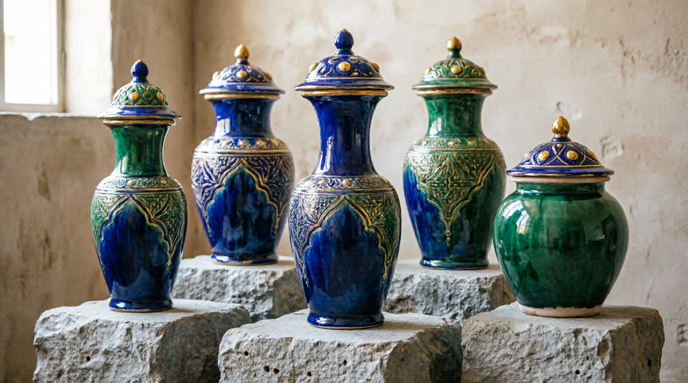
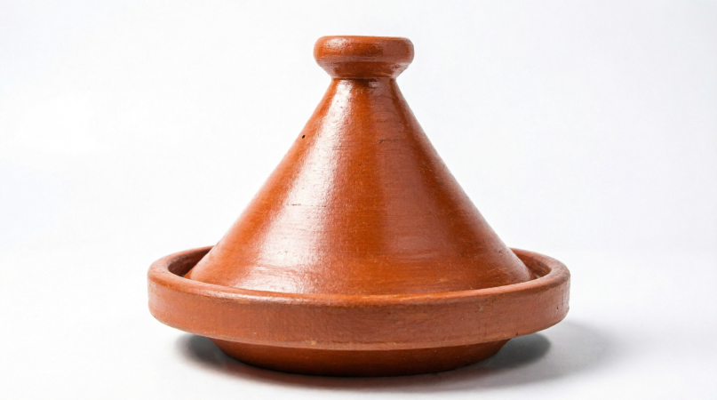
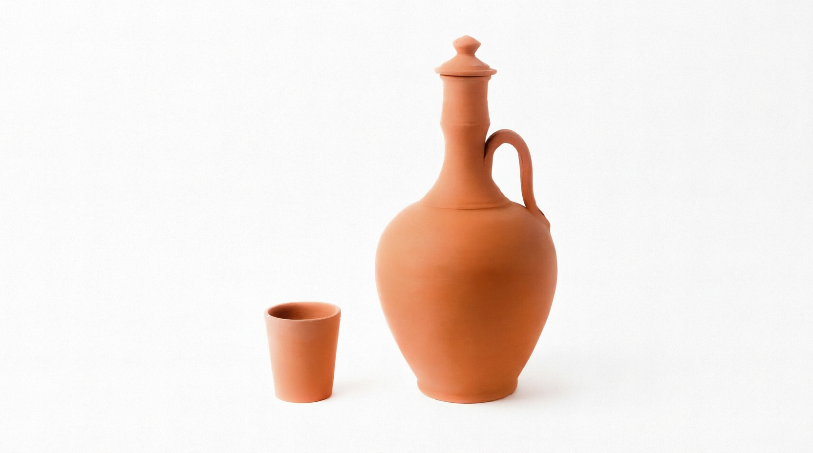
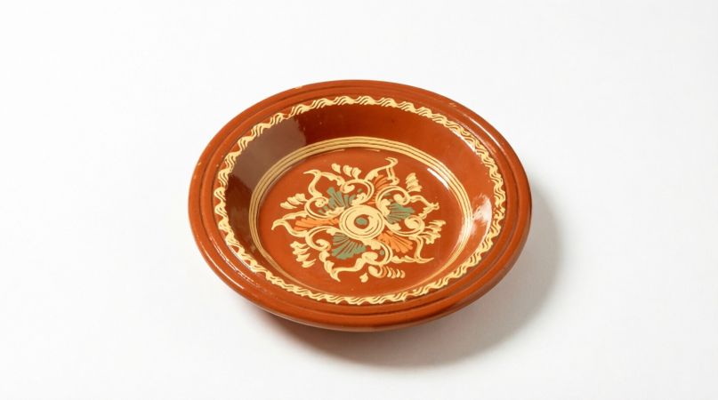

Cerámica Artesanal
Una conexión íntima entre las manos de los artesanos y la arcilla pura. Creamos vasijas, vajillas y decoraciones únicas que cuentan historias de paciencia, beauty y herencia cultural marroquí.
Explorar TiendaDescubre nuestra selección de piezas únicas y artesanales.

Plato de cerámica hecho y pintado a mano por artesanos de Fez, ideal para decoración o uso diario.
70,00 €

Auténtico juego de té marroquí tallado a mano, perfecto para mantener la tradición en tu mesa.
100,00 €

Conjunto completo de soperas tradicionales de barro cocido con acabados esmaltados.
200,00 €

Jarrón clásico con el famoso azul cobalto de Safi, una pieza de arte única.
100,00 €

Diseño ancestral con motivos geométricos bereberes tallados en arcilla pura.
100,00 €

Set de tres pequeños floreros decorativos, ideales para cualquier rincón de tu hogar.
200,00 €

Tayín de barro refractario apto para cocinar a fuego lento recetas tradicionales.
25,00 €

Jarra de arcilla natural ideal para mantener el agua fresca de forma tradicional.
15,00 €

Plato plano de terracota natural, rústico, resistente y con un acabado minimalista.
30,00 €